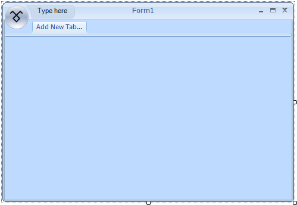
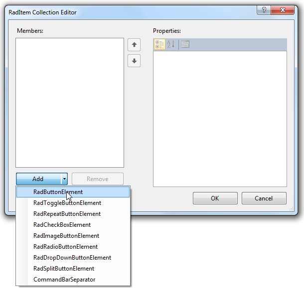
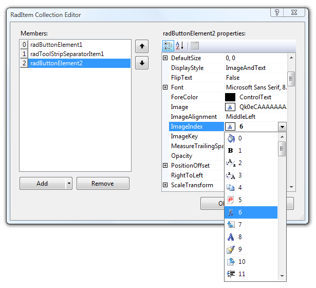
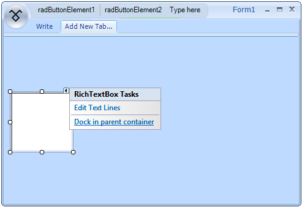
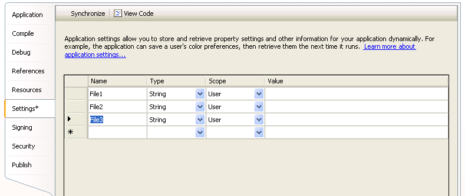
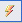
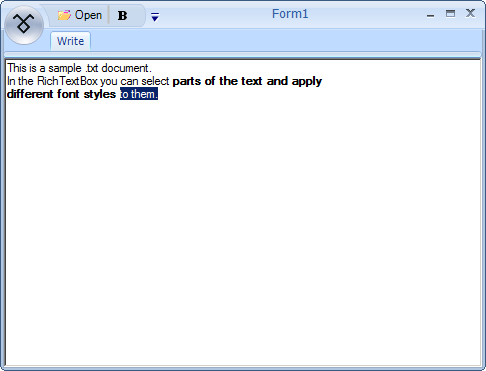

Creating the Start Menu, Quick Access Toolbar, and Shortcuts
This tutorial is in three parts. First, you will create a Quick Access Toolbar with some functionality on a Telerik RadRibbonBar.
Then, you will add a Start Menu to add more functionality. Last, you will create keyboard shortcuts to some of these functions.
Add Quick Access Toolbar Items to a Telerik RadRibbonBar
Prepare an ImageList to be Used in the Telerik RadRibbonBar
Drag a WinForms ImageList component from the toolbox to the form.
In the area below the design surface, you will see imageList1.Using the Images Collection Editor, add the desired images to the ImageList.
You can use the existing images, or any similar sized images or icons that you have available. For more help with this task, seeHow to: Add or Remove ImageList Images with the Designer in the Visual Studio 2005 documentation.
Adding a Telerik RadRibbonBar
Create a RadRibbonForm__by changing the base class of a standard form to __RadRibbonForm or by
using the Add New Item dialog for your project:Select the RadRibbonBar control on the form and open the Properties
window in Visual Studio. In the Properties window find the ImageList
property and from the drop-down menu select the imageList1 option.
Adding Tabs to the Telerik RadRibbonBar
Click Add New Tab... to create a new tab.
Type the word Write and press Enter:

Add Items to the Quick Access Toolbar
Select the RadRibbonBar control in the Visual Studio Designer.
Open the Properties window and locate the QuickAccessToolbarItems property.
Open the Collection Editor for this collection.
On the Add button, click the drop-down arrow and select RadButtonElement from the list.
Repeat this step to add a CommandBarSeparator and then another RadButtonElement.
Set Properties of the RadButtonElements
In the Members list, click radButtonElement1.
Locate its DisplayStyle property, open its drop-down list, and select Image.
Locate the ImageIndex property, open its drop-down list,
and select an image from those stored in the imageList1 component. Set the text of the element to 'Open File'.In the Members list, click radButtonElement2.
Change its DisplayStyle property to Image and the ImageIndex
property to an icon that represents Bold. Select the appropriate image from the Image List.Click OK to close the RadElement Collection Editor.
Add a RichTextBox
Drag a standard WinForms RichTextBox control onto the form.
Open the Smart Tag of the control and execute the 'Dock in parent container' action.

Add Code
- Copy the following code to the code window of the form. The first method will run when clicking the FileOpen Quick Access Menu item. The second method will run when the user clicks the Bold item.
[C#] Open a text file and make its text bold
private void radButtonElement1_Click(object sender, EventArgs e)
{
OpenFileDialog dlg = new OpenFileDialog();
dlg.Filter = "*.txt,*.rtf|*.txt;*.rtf";
dlg.ShowDialog();
if (dlg.FileName != string.Empty)
{
OpenFile(dlg.FileName);
}
}
private void OpenFile(string fname)
{
if (fname.EndsWith("txt"))
{
richTextBox1.LoadFile(fname, RichTextBoxStreamType.PlainText);
}
else
{
if (fname.EndsWith("rtf"))
{
richTextBox1.LoadFile(fname, RichTextBoxStreamType.RichText);
}
}
}
private void radButtonElement2_Click(object sender, EventArgs e)
{
if (richTextBox1.SelectionFont.Bold)
{
richTextBox1.SelectionFont = new Font(richTextBox1.SelectionFont, FontStyle.Regular);
}
else
{
richTextBox1.SelectionFont = new Font(richTextBox1.SelectionFont, FontStyle.Bold);
}
}
[VB.NET] Open a text file and make its text bold
Private Sub RadButtonElement1_Click(ByVal sender As System.Object, ByVal e As System.EventArgs) Handles RadButtonElement1.Click
Dim dlg As New OpenFileDialog
dlg.Filter = "*.txt,*.rtf|*.txt;*.rtf"
dlg.ShowDialog()
If dlg.FileName > "" Then
OpenFile(dlg.FileName)
End If
End Sub
Private Sub OpenFile(ByVal fname As String)
If fname.EndsWith("txt") Then
RichTextBox1.LoadFile(fname, RichTextBoxStreamType.PlainText)
ElseIf fname.EndsWith("rtf") Then
RichTextBox1.LoadFile(fname, RichTextBoxStreamType.RichText)
End If
End Sub
Private Sub RadButtonElement2_Click(ByVal sender As System.Object, ByVal e As System.EventArgs) Handles RadButtonElement2.Click
If RichTextBox1.SelectionFont.Bold Then
RichTextBox1.SelectionFont = New Font(RichTextBox1.SelectionFont, RichTextBox1.SelectionFont.Style And Not FontStyle.Bold)
Else
RichTextBox1.SelectionFont = New Font(RichTextBox1.SelectionFont, RichTextBox1.SelectionFont.Style Or FontStyle.Bold)
End If
End Sub
In C#, it is necessary to connect the controls to the methods you have copied into the code:
Click radButtonElement1 (File Open button) on the form.
In the Properties window, click the Events icon.
Locate the Click action.
Click the drop-down arrow and choose radButtonElement1_Click from the list.
Change the Click action of radButtonElement2 (Bold button) to radButtonElement2_Click.
Run the Form.
Press F5 to run the form.
Type some text into the RichTextBox control, highlight it,
and click the Bold Quick Access Menu item to toggle the font's bold property on and off.Use the File Open icon on the Quick Access Menu to open a .txt file or an .rtf file into the RichTextBox.
Add Start Menu Items to the Telerik RadRibbonBar
Add a Start Button
Select the RadRibbonBar control on your form.
Open the Properties window in Visual Studio, locate the
StartButtonImage property, and open its editor.In the Select Resource dialog box select the Local Resource option.
Click the Import button.
Select a suitable image and click Open.
Click OK.
Add Items to the Start Menu
Select the RadRibbonBar control on your form and in the Properties__window locate the __StartMenuItems property.
Open the Collection Editor for this property.
On the Collection Editor form click the drop-down arrow next to the Add button and
select RadMenuItem from the list.Repeat this action to add a RadMenuSeparatorItem and then another RadMenuItem.
Change the DisplayStyle of radMenuItem1 to
Image and its Text property to Open File.Change the ImageIndex of radMenuItem1 to match
the image of the File Open item on the Quick Access Menu.Change the DisplayStyle of radMenuItem2 to
Text and its Text property to Recent Files.
Add a Sub-menu to radMenuItem2 (Recent Files Item)
Locate the Items property of radMenuItem2.
Open the Collection Editor for this property.
Add three RadMenuItem's and change their DisplayStyle
property to Text.
The sub-menu will display the three most recently used files.
Click OK to close the Collection Editor for the sub-menu.
Click OK to close the parent Collection Editor.
Create Application Settings to Store the Most Recently Used Files
Right-click on the project in the Solution Explorer and choose Properties from the bottom of the menu.
Click the Settings tab to open the Application Settings property page.
In the Name field of the first row type File1, then tab to the next cell.
A new row will be created.Type File2 in the Name field of the second
row and File3 in the Name field of the third row.
These settings will be used to keep track of the three most recent files a user has opened.
If you would like to learn more about Application Settings, follow the Learn more about application settings... link on the page:

Modify Existing Code
- Replace the OpenFile method with the following code:
[C#] Modify the OpenFile method
private void ModifiedOpenFile(string fname)
{
if (fname.EndsWith("txt"))
{
richTextBox1.LoadFile(fname, RichTextBoxStreamType.PlainText);
AddNewMostRecentFile(fname);
}
else
{
if (fname.EndsWith("rtf"))
{
richTextBox1.LoadFile(fname, RichTextBoxStreamType.RichText);
AddNewMostRecentFile(fname);
}
}
}
[VB.NET] Modify the OpenFile method
Private Sub ModifiedOpenFile(ByVal fname As String)
If fname.EndsWith("txt") Then
RichTextBox1.LoadFile(fname, RichTextBoxStreamType.PlainText)
AddNewMostRecentFile(fname)
Else
If fname.EndsWith("rtf") Then
RichTextBox1.LoadFile(fname, RichTextBoxStreamType.RichText)
AddNewMostRecentFile(fname)
End If
End If
End Sub
- Add the Click event of the File Open button (radMenuItem1) on the Start Menu to the event handler that is being used for the File Open button (radButtonElement1) on the Quick Access Menu.
In C#, do this in the property window.
Choose radMenuItem1 from the control list in the Properties window.
Click the Events icon .
Locate the Click event and select radButtonElement1_Click from its drop-down list.
Add Code for the Start Menu Items
Note that OpenfromMRU method will respond to the user clicking any of the three items on the Recent____Files sub-menu.
[C#] Add most recent files functionality
private void AddNewMostRecentFile(string newFile)
{
//last three files are stored in appliation settings: "File1","File2","File3" with File1 being the newest
//replace 3 with 2 and 2 with 1 and then add new to 1
Properties.Settings.Default.File3 = Properties.Settings.Default.File2;
Properties.Settings.Default.File2 = Properties.Settings.Default.File1;
Properties.Settings.Default.File1 = newFile;
}
private void radMenuItem1_Click(object sender, EventArgs e)
{
OpenFileDialog dlg = new OpenFileDialog();
dlg.Filter = "*.txt,*.rtf|*.txt;*.rtf";
dlg.ShowDialog();
if (dlg.FileName != string.Empty)
{
ModifiedOpenFile(dlg.FileName);
}
}
private void radMenuItem2_DropDownOpening(object sender, CancelEventArgs e)
{
//dynamically populate MRU File list
//this example is not concerned about duplicates
radMenuItem3.Text = Properties.Settings.Default.File1;
radMenuItem4.Text = Properties.Settings.Default.File2;
radMenuItem5.Text = Properties.Settings.Default.File3;
}
private void OpenfromMRU(object sender, EventArgs e)
{
Telerik.WinControls.UI.RadMenuItem filetoOpen = (Telerik.WinControls.UI.RadMenuItem)sender;
if (filetoOpen.Text != String.Empty)
{
ModifiedOpenFile(filetoOpen.Text);
}
}
[VB.NET] Add most recent files functionality
Private Sub AddNewMostRecentFile(ByVal newFile As String)
'last three files are stored in appliation settings: "File1","File2","File3" with File1 being the newest
'replace 3 with 2 and 2 with 1 and then add new to 1
My.Settings.File3 = My.Settings.File2
My.Settings.File2 = My.Settings.File1
My.Settings.File1 = newFile
End Sub
Private Sub radMenuItem1_Click(ByVal sender As Object, ByVal e As EventArgs) Handles RadMenuItem1.Click
Dim dlg As New OpenFileDialog()
dlg.Filter = "*.txt,*.rtf|*.txt;*.rtf"
dlg.ShowDialog()
If dlg.FileName <> String.Empty Then
ModifiedOpenFile(dlg.FileName)
End If
End Sub
Private Sub radMenuItem2_DropDownOpening(ByVal sender As Object, ByVal e As CancelEventArgs) Handles RadMenuItem2.DropDownOpening
'dynamically populate MRU File list
'this example is not concerned about duplicates
RadMenuItem3.Text = My.Settings.File1
RadMenuItem4.Text = My.Settings.File2
RadMenuItem5.Text = My.Settings.File3
End Sub
Private Sub OpenfromMRU(ByVal sender As Object, ByVal e As EventArgs) Handles RadMenuItem5.Click, RadMenuItem4.Click, RadMenuItem3.Click
Dim filetoOpen As Telerik.WinControls.UI.RadMenuItem = DirectCast(sender, Telerik.WinControls.UI.RadMenuItem)
If filetoOpen.Text <> [String].Empty Then
ModifiedOpenFile(filetoOpen.Text)
End If
End Sub
In C#, it is necessary to connect these methods to the control events:
Choose radMenuItem1 from the control list in the Properties window.
Click the Events icon .
Locate the Click event and select radMenuItem2_DropDownOpening from its drop-down list.
Choose radMenuItem3.
Change its Click event to OpenfromMRU.
Change the Click events for radMenuItem4 and radMenuItem5
to OpenfromMRU.
Run the Form
Add Shortcuts to Telerik RadRibbonBar Items
Create a Shortcut for the File Open and Bold functions
The shorcut assignments is pretty simple. Just switch to the Code View of the fold
and add shortcuts to the appropriate RadMenuItem by calling the Add method of their Shortcuts property.
You should pass a new instance of the RadShortcut type giving the keys that will trigger the shortcut:
[C#] Add most recent files functionality
radMenuItem1.Shortcuts.Add(new Telerik.WinControls.RadShortcut(Keys.Control, Keys.O));
radMenuItem2.Shortcuts.Add(new Telerik.WinControls.RadShortcut(Keys.Control, Keys.B));
[VB.NET] Add most recent files functionality
RadMenuItem1.Shortcuts.Add(New Telerik.WinControls.RadShortcut(Keys.Control, Keys.O))
RadMenuItem2.Shortcuts.Add(New Telerik.WinControls.RadShortcut(Keys.Control, Keys.B))
Run the Form
Press F5 to run the form.
Try out the new Ctrl+O and Ctrl+B keyboard shortcuts.